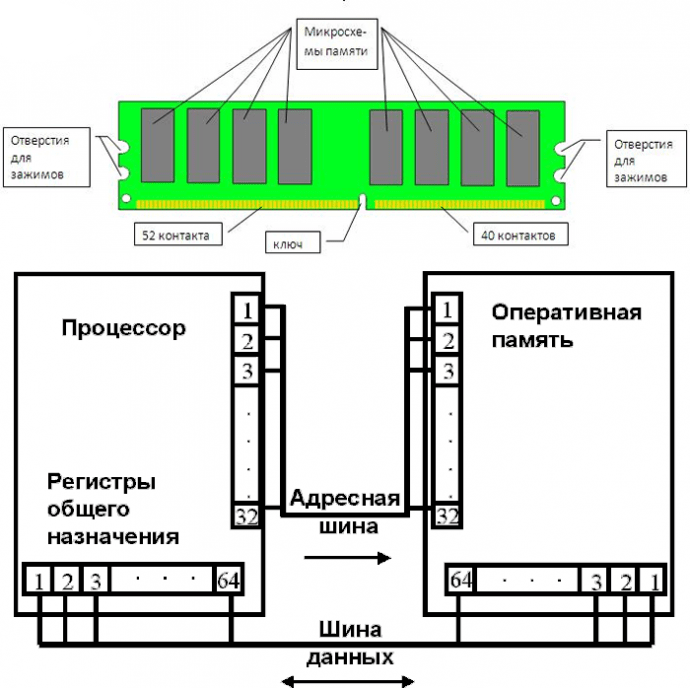

Традиционно производители памяти внедряют новую архитектуру с периодичностью в 4-5 лет. Помимо архитектуры памяти, каждые год-два изменяется и техпроцесс производства чипов памяти. Синхронная память SDRAM появилась в середине 1990-х годов. Именно тогда в массовое производство была внедрена синхронная память SDR SDRAM PC66, которая вскоре была заменена на память PC100, а затем и PC133. В 2000 году на смену памяти SDR SDRAM пришла память DDR SDRAM, отличающаяся большей пропускной способностью при меньшем энергопотреблении. Вслед за памятью DDR была внедрена память DDR2, которая в настоящий момент является наиболее распространенной. Первоначально существовала только память DDR2-400, на смену которой довольно быстро пришла память DDR2-533. Затем появилась память DDR2-667, DDR2-800 и даже DDR2-1066. А в будущем году нас ждет постепенный переход на память стандарта DDR3. Первоначально память DDR3 будет внедрена только в платформы на базе процессоров компании Intel, но позднее, в 2008 году, когда память DDR3 станет массовой и дешевой, ее также начнут использовать и в системах на базе процессоров AMD.
В данный момент самым распространенным стандартом памяти является DDR4. четвёртое поколение оперативной памяти, являющееся эволюционным развитием предыдущих поколений DDR SDRAM. Отличается повышенными частотными характеристиками и пониженным напряжением питания. Основное отличие DDR4 от предыдущего стандарта DDR3 заключается в удвоенном до 16 числе внутренних банков (в 2 группах банков), что позволило увеличить скорость передачи внешней шины. Пропускная способность памяти DDR4 в перспективе может достигать 25,6 ГБ/c (в случае повышения максимальной эффективной частоты до 3200 МГц). Кроме того, повышена надёжность работы за счёт введения механизма контроля чётности на шинах адреса и команд. Изначально стандарт DDR4 определял частоты от 1600 до 2400 МГц с перспективой роста до 3200 МГц. В массовое производство вышла во 2 квартале 2014 года, сперва только ECC-память, а в следующем квартале начались продажи и не-ECC модулей DDR4, вместе с процессорами Intel Haswell-E/Haswell-EP, требующими DDR4.
Для начала давайте разберёмся как работает операвтиная память в нашем компьютере и для чего она нужна.Ее функционирование тесно связано с CPU и информационными носителями. Данные с жесткого диска или другого накопителя первоначально попадают в оперативную память и только после их обрабатывает ЦП. Структура ОЗУ похожа на таблицу, где сперва выбирается строчка, а после — столбец. Она делится на банки — ячейки SDRAM. Например, современные варианты DDR4 отличаются от DDR3 удвоенным числом банков. За счет растет производительность. Быстрота DDR4 достигает 25,6 ГБ/c, при этом шина может функционировать на 3200 МГц.
Оперативная память, или RAM-память (Random Access Memory), — это память с произвольным доступом. Поскольку элементарной единицей информации является бит, оперативную память можно рассматривать как некий набор элементарных ячеек, каждая из которых способна хранить один информационный бит. Элементарная ячейка оперативной памяти представляет собой конденсатор, способный в течение короткого промежутка времени сохранять электрический заряд, наличие которого можно ассоциировать с информационным битом. Проще говоря, при записи логической единицы в ячейку памяти конденсатор заряжается, при записи нуля — разряжается. Поскольку элементарной единицей информации для современных компьютеров является байт (8 бит), то для простоты можно считать, что элементарная ячейка памяти, которая может адресоваться, хранит не бит, а байт информации. Таким образом, доступ к памяти производится не побитно, а побайтно.
Тайминги это значения, отражающие время, за которое обрабатываются данные. Показатели выглядят как три
числа, идущие по порядку. Каждое число — временной отрезок, который измеряется в тактах шины.
Следует разобраться с аббревиатурами CAS и RAS. Последние две буквы означают Address Strobe —
строб-сигнал адреса. Только в первом случае это про колонку (Column), а во втором — про строку (Row).
1 CAS Latency - латентность CAS.(Один из самых значимых показателей: именно он говорит, сколько
времени в целом уходит на поиск необходимых данных после того, как ЦП попросит доступ на
считывание)
2 RAS to CAS Delay - задержка RAS to CAS.(Указывает на число тактов, которое занимает получение доступа
к RAM и активации строки, а потом — колонки, которая содержит необходимое инфо, и команды на считывание
данных или же их запись)
3 RAS Precharge Time - время зарядки RAS.(Поскольку ОЗУ — динамическая память, ее ячейки время от
времени разряжаются и нуждаются в периодической перезарядке. По этой причине данные, которые содержатся
в ней, обновляются. Это называется регенерацией ОЗУ.
Таким образом, показатель RAS Precharge в тактах отображает временной отрезок, проходящий между сигналом
на зарядку — регенерацию ОЗУ — и разрешением на доступ к следующей строчке информации.)
На что влияют тайминги. Если кратко — на скорость, с которой считывается информация, и быстроту инфообмена между планкой и процессором. Естественно, это воздействует и на быстроту функционирования компьютера в целом. Чем ниже тайминг, тем выше производительность, тем скорее ЦП получает доступ к банкам.